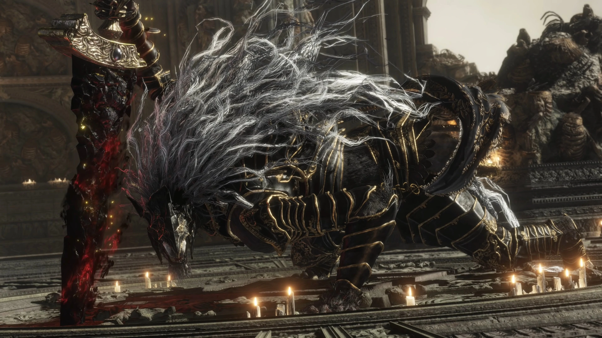

Maliketh, the Black Blade
Health: 21,903 HP Health: 10,620 HP Defense: 120 Stance: 80 Parryable: Yes, with a well-timed use of Blasphemous Claw against 2 specific attacks Is vulnerable to a critical hit after being stance broken Drops 220,000 Runes